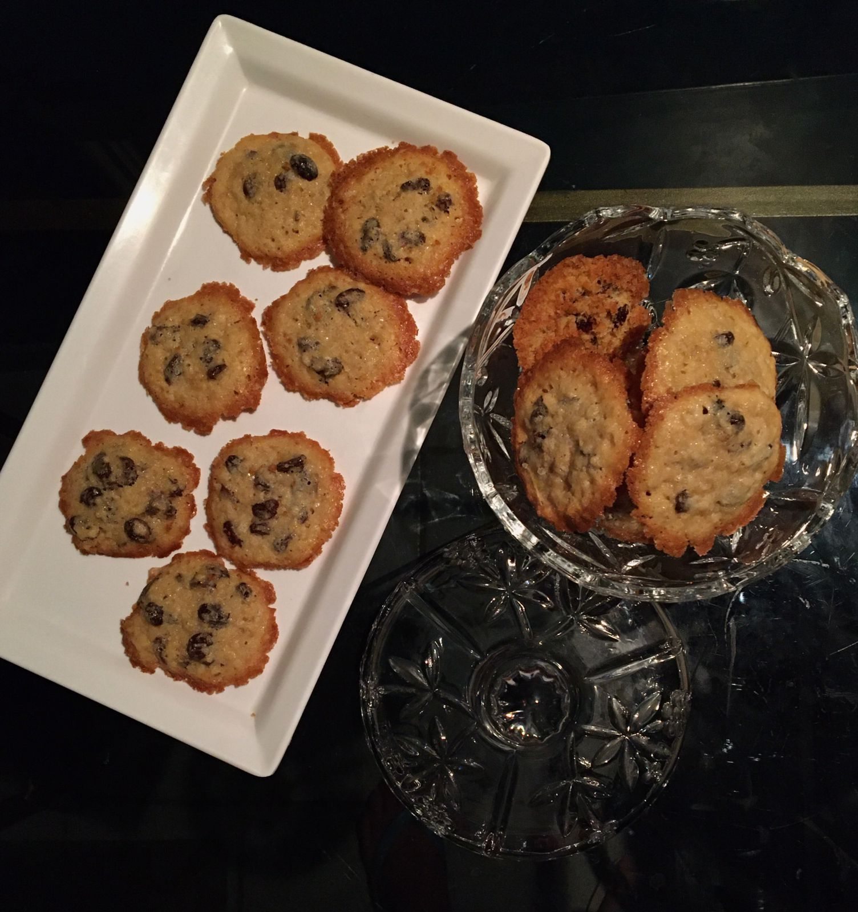

Informação Nutricional - Porção de 1 Unidade
| Calorias |
Gorduras |
Carboidratos |
Proteinas |
| 65 kcal
| 0,8 g |
10,3 g |
2,3 g |
Outras Informações
| Sem Glúten e Sem Lactose |
INGREDIENTES
1 xícara de manteiga sem sal (temperatura ambiente)
1/2 xícara de chá de açúcar refinado
1/2 xícara de chá de açúcar mascavo
1 ovo grande
1 xícara de chá de farinha de trigo
1/2 aveia em flocos
135g de uva passa
1 colher de chá de fermento
PREPARAÇÃO:

Em uma batedeira, coloque a manteiga, o açúcar refinado, o açúcar mascavo e bata até chegar em um creme fofo.
Ainda batendo, adicione os ovos e espere eles se incorporarem na massa.
Adicione a farinha de trigo e os flocos de aveia até misturar.
Acrescente as passas aos poucos.
Assim que tiver tudo muito bem incorporado, pare de bater.
Faça pequenas bolinhas achatadas com a massa e disponha elas em uma assadeira, com papel manteiga.
Asse ao forno pré-aquecido a 180 °C, por cerca de 12 a 15 minutos, ou até que fiquem douradinhos.
Agora é só servir. bom apetite.